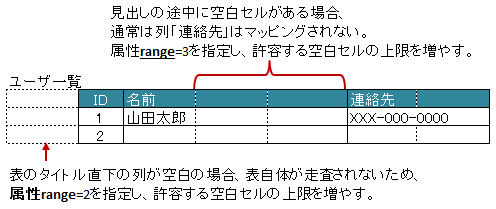

-
@Target(value={METHOD,FIELD}) @Retention(value=RUNTIME) @Documented @XlsFieldProcessor(value={}) public @interface XlsHorizontalRecords
水平方向に連続する行をCollection(List, Set)または配列にマッピングする際に指定します。基本的な使い方
表名を、属性
tableLabel()で指定します。レコード用クラスは、列の定義をアノテーション
XlsColumnで指定します。// シート用クラス @XlsSheet(name="Users") public class SampleSheet { @XlsHorizontalRecords(tableLabel="ユーザ一覧") private List<UserRecord> records; } // レコード用クラス public class UserRecord { @XlsColumn(columnName="ID") private int id; @XlsColumn(columnName="名前") private String name; }
基本的な使い方
書き込み時にレコードが不足、余分である場合の操作の指定
アノテーション
XlsRecordOption指定することで、書き込み時のレコードの制御を指定することができます。属性
XlsRecordOption.overOperation()で、書き込み時にJavaオブジェクトのレコード数に対して、シートのレコード数が足りないときの操作を指定します。属性
XlsRecordOption.remainedOperation()で、書き込み時にJavaオブジェクトのレコード数に対して、シートのレコード数が余っているときの操作を指定します。@XlsSheet(name="Users") public class SampleSheet { @XlsHorizontalRecords(tableLabel="ユーザ一覧") @XlsRecordOption(overOperation=OverOperation.Insert, remainedOperation=RemainedOperation.Clear) private List<UserRecord> records; }
書き込み時の制御を行う場合
任意の位置からレコードが開始するかを指定する場合
データレコードの途中で中見出しがあり、分割されているような表の場合、アノテーション
XlsRecordFinderで、 レコードの開始位置を決める処理を指定することができます。属性
XlsRecordFinder.value()で、レコードの開始位置を検索する実装クラスを指定します。属性
XlsRecordFinder.args()で、レコードの開始位置を検索する実装クラスに渡す引数を指定します。@XlsSheet(name="Users") // マッピングの定義 public class SampleSheet { @XlsOrder(1) @XlsHorizontalRecords(tableLabel="成績一覧", bottom=2, terminal=RecordTerminal.Border, terminateLabel="/クラス.+/") @XlsRecordFinder(value=ClassNameRecordFinder.class, args="クラスA") private List<UserRecord> classA; @XlsOrder(2) @XlsHorizontalRecords(tableLabel="成績一覧", bottom=2, terminal=RecordTerminal.Border, terminateLabel="/クラス.+/") @XlsRecordFinder(value=ClassNameRecordFinder.class, args="クラスB") private List<UserRecord> classB; } // クラス用の見出しのレコードを探すクラス public class ClassNameRecordFinder implements RecordFinder { @Override public CellPosition find(ProcessCase processCase, String[] args, Sheet sheet, CellPosition initAddress, Object beanObj, Configuration config) { // 実装は省略 } }任意の位置のレコードをマッピングする場合
表の名称を正規表現、正規化して指定する場合
シートの構造は同じだが、ラベルのセルが微妙に異なる場合、ラベルセルを正規表現による指定が可能です。
また、空白や改行を除去してラベルセルを比較するように設定することも可能です。正規表現で指定する場合、アノテーションの属性の値を
/正規表現/のように、スラッシュで囲みます。- スラッシュで囲まない場合、通常の文字列として処理されます。
- 正規表現の指定機能を有効にするには、システム設定のプロパティ
Configuration.setRegexLabelText(boolean)の値を trueに設定します。
ラベセルの値に改行が空白が入っている場合、それらを除去し正規化してアノテーションの属性値と比較することが可能です。
- 正規化とは、空白、改行、タブを除去することを指します。
- ラベルを正規化する機能を有効にするには、、システム設定のプロパティ
Configuration.setNormalizeLabelText(boolean)の値を trueに設定します。
これらの指定が可能な属性は、
tableLabel()、terminateLabel()です。// システム設定 XlsMapper xlsMapper = new XlsMapper(); xlsMapper.getConfiguration() .setRegexLabelText(true) // ラベルを正規表現で指定可能にする機能を有効にする。 .setNormalizeLabelText(true); // ラベルを正規化して比較する機能を有効にする。 // シート用クラス @XlsSheet(name="Users") public class SampleSheet { // 正規表現による指定 @XlsHorizontalRecords(tableLabel="/ユーザ一覧.+/") private List<UserRecord> records; }- バージョン:
- 2.0
- 作成者:
- Naoki Takezoe, T.TSUCHIE
-
-
任意要素のサマリー
任意要素 修飾子とタイプ 任意要素と説明 intbottomtableLabel()で指定した表のタイトルから、実際の表の開始位置がどれだけ離れているか指定します。ProcessCase[]cases適用するケースを指定します。StringheaderAddress表の開始位置のセルのアドレスを指定します。intheaderBottom見出し用セルから、データ行の開始位置がどれだけ離れているかを指定します。intheaderColumn表の開始位置（見出し列）セルの行番号を指定します。intheaderLimit表の見出しとなるセルのカラムが指定数見つかったタイミングで Excelシートの走査を終了したい場合に指定します。intheaderRow表の開始位置（見出し行）セルの行番号を指定します。booleanoptionalレコードが見つからない場合に、エラーとしないで、無視して処理を続行するかどうかを指定します。intrange見出し用セルを走査するときの許容する空白セルの個数を指定します。Class<?>recordClassレコードのマッピング先のクラスを指定します。StringtableLabel表の見出し（タイトル）ラベルを指定します。RecordTerminalterminal表の終端の種類を指定します。StringterminateLabel表の終端を示すセルの文字列を指定します。
-
-
-
要素の詳細
-
optional
public abstract boolean optional
レコードが見つからない場合に、エラーとしないで、無視して処理を続行するかどうかを指定します。- 戻り値:
- trueの場合、無視しして処理を続行します。
- デフォルト:
- false
-
-
-
tableLabel
public abstract String tableLabel
表の見出し（タイトル）ラベルを指定します。 値を指定した場合、ラベルと一致するセルを起点に走査を行います。属性
headerRow(),headerColumn()headerAddress()のどちらか一方を指定可能です。システム設定により、正規表現による指定や正規化（改行、空白、タブの削除）による比較の対象となります。
- 戻り値:
- デフォルト:
- ""
-
-
-
terminateLabel
public abstract String terminateLabel
表の終端を示すセルの文字列を指定します。表が他の表と連続しており属性
terminal()でRecordTerminal.Border、RecordTerminal.Emptyのいずれを指定しても終端を検出できない場合があります。
このような場合は属性terminateLabel()で終端を示すセルの文字列を指定します。// シート用クラス @XlsSheet(name="Users") public class SampleSheet { // レコードの読み飛ばしを有効にします。 @XlsHorizontalRecords(tableLabel="クラス情報", terminal=RecordTerminal.Border, terminateLabel="平均") private List<UserRecord> records; }
表の終端セルの指定
システム設定により、正規表現による指定や正規化（改行、空白、タブの削除）による比較の対象となります。
- 戻り値:
- デフォルト:
- ""
-
-
-
headerRow
public abstract int headerRow
表の開始位置（見出し行）セルの行番号を指定します。headerColumn()属性とセットで指定します。@XlsSheet(name="Users") public class SampleSheet { // インデックス形式で表の開始位置を指定する(値は0から始まります) @XlsHorizontalRecords(headerColumn=0, headerRow=1) private List<UserRecord> records1; }- 戻り値:
- 値は0から始まります。-1以下の負の値は無視されます。
- デフォルト:
- -1
-
-
-
headerColumn
public abstract int headerColumn
表の開始位置（見出し列）セルの行番号を指定します。headerRow()属性とセットで指定します。@XlsSheet(name="Users") public class SampleSheet { // インデックス形式で表の開始位置を指定する(値は0から始まります) @XlsHorizontalRecords(headerColumn=0, headerRow=1) private List<UserRecord> records1; }- 戻り値:
- 値は0から始まります。-1以下の負の値は無視されます。
- デフォルト:
- -1
-
-
-
headerAddress
public abstract String headerAddress
表の開始位置のセルのアドレスを指定します。 値を指定した場合、指定したアドレスを起点に走査を行います属性
headerRow(),headerColumn()のどちらか一方を指定可能です表の名称がない場合、表の開始位置をインデックスやアドレスで指定します。
headerAddress()で、B3のようにシートのアドレス形式で指定します。
@XlsSheet(name="Users") public class SampleSheet { // アドレス形式で表の開始位置を指定する場合 @XlsHorizontalRecords(headerAddress="A2") private List<UserRecord> records2; }- 戻り値:
- 'A1'の形式で指定します。空文字は無視されます。
- デフォルト:
- ""
-
-
-
recordClass
public abstract Class<?> recordClass
レコードのマッピング先のクラスを指定します。省略した場合、定義されたGenericsタイプから取得します。
- デフォルト:
- java.lang.Object.class
-
-
-
terminal
public abstract RecordTerminal terminal
表の終端の種類を指定します。デフォルトでは行に1つもデータが存在しない場合、その表の終端となります。 行の一番左側の列の罫線によって表の終端を検出する方法もあります。 この場合は 属性
terminal()にRecordTerminal.Borderを指定してください。@XlsSheet(name="Users") public class SampleSheet { @XlsHorizontalRecords(tableLabel="ユーザ一覧"), terminal=RecordTerminal.Border) private List<UserRecord> records; }
表の終端の指定
- 戻り値:
RecordTerminal.Emptyの場合、空のレコードがあると処理を終了します。
- デフォルト:
- com.gh.mygreen.xlsmapper.annotation.RecordTerminal.Empty
-
-
-
range
public abstract int range
見出し用セルを走査するときの許容する空白セルの個数を指定します。見出しセルを走査する際には、右方向に向かって検索をしますが、通常は空白セルが見つかった時点で走査を終了します。
空白セルの次にも見出し用セルがあるような場合、属性range()を指定することで、 指定した値分の空白セルを許容し、さらに先のセルの検索を試みます。また、属性
headerAddress()やtableLabel()で指定した位置から表が開始しないような場合も、 属性range()を指定することで、さらに先のセルの検索を試みます。@XlsSheet(name="Users") public class SampleSheet { // レコードの読み飛ばしを有効にします。 @XlsHorizontalRecords(tableLabel="クラス情報", terminal=RecordTerminal.Border, range=3) private List<UserRecord> records; }表の見出しに空白がある場合
- 戻り値:
- 値は1から始まります。
- デフォルト:
- 1
-
-
-
bottom
public abstract int bottom
tableLabel()で指定した表のタイトルから、実際の表の開始位置がどれだけ離れているか指定します。表の名称が定義してあるセルの直後に表がなく離れている場合、属性
bottom()で表の開始位置がどれだけ離れているか指定します。
下方向の行数を指定します。@XlsSheet(name="Users") public class SampleSheet { @XlsHorizontalRecords(tableLabel="ユーザ一覧", bottom=3) private List<UserRecord> records; }
表の名称から離れている際の開始位置の指定
- 戻り値:
- 値は1から始まります。
- デフォルト:
- 1
-
-
-
headerLimit
public abstract int headerLimit
表の見出しとなるセルのカラムが指定数見つかったタイミングで Excelシートの走査を終了したい場合に指定します。主に無駄な走査を抑制したい場合にします。
テーブルが隣接しており終端を検出できない場合などに、 見出し用セルのカラム数を明示的に指定してテーブルの区切りを指定する場合に使用できます。
// シート用クラス @XlsSheet(name="Users") public class SampleSheet { // レコードの読み飛ばしを有効にします。 @XlsHorizontalRecords(tableLabel="クラス情報", terminal=RecordTerminal.Border, headerLimit=3) private List<UserRecord> records; }
表の見出しの走査の終了条件の指定
- 戻り値:
- 値は0から始まります。
- デフォルト:
- 0
-
-
-
headerBottom
public abstract int headerBottom
見出し用セルから、データ行の開始位置がどれだけ離れているかを指定します。表の見出しセルが縦に結合され、データレコードの開始位置が離れている場合、属性
headerBottom()でデータレコードの開始位置がどれだけ離れているか指定します。
下方向の行数を指定します。下記の例の場合、見出しの「テスト結果」は横に結合されているため
XlsColumn.headerMerged()と組み合わせて利用します。// シート用クラス @XlsSheet(name="Users") public class SampleSheet { // 見出しが縦に結合され、データのレコードの開始位置が離れている場合 @XlsHorizontalRecords(tableLabel="クラス情報", headerBottom=2) private List<SampleRecord> records; } } // レコード用クラス public class SampleRecord { @XlsColumn(columnName="No.") private int no; @XlsColumn(columnName="名前") private String name; // セル「算数」のマッピング @XlsColumn(columnName="テスト結果") private int sansu; // セル「国語」のマッピング // 結合されている見出しから離れている数を指定する @XlsColumn(columnName="テスト結果", headerMerged=1) private int kokugo; / セル「合計」のマッピング // 結合されている見出しから離れている数を指定する @XlsColumn(columnName="テスト結果", headerMerged=2) private int sum; }
表の見出しからデータレコードが離れているときの指定
- 戻り値:
- 値は1から始まります。
- 導入されたバージョン:
- 1.1
- デフォルト:
- 1
-
-
-
cases
public abstract ProcessCase[] cases
適用するケースを指定します。- 戻り値:
- 何も指定しない場合は全てのケースに適用されます。
- 導入されたバージョン:
- 2.0
- デフォルト:
- {}
-
-